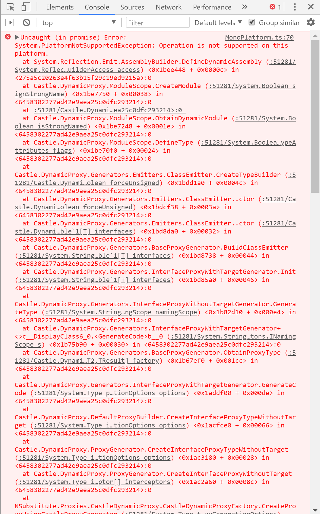

Commençons par ce qui fait mal. Je dois avouer que ce blog post fait suite à un fail.
Dans cette version 0.2 de Blazor, il y a pas mal de code glue à produire pour pouvoir appeler une fonction javascript à partir de votre code C#.
Cela se passe en 2 étapes :
- A partir de votre code javascript, il faut enregistrer une fonction dans le contexte de Blazor.
Blazor.registerFunction('DisplayAlert', (data) => {
alert(data);
return true;
});
- Quand vous souhaitez faire appel à cette fonction on utilisera alors un code de ce type, cette fois ci dans votre code C#.
RegisteredFunction.Invoke<bool>("DisplayAlert", text);
On remarque que tout ca fonctionne à base de magic strings (le nom de la methode), que les functions sont obligées de retourner une valeur (void n'est pas prit en compte pour l'instant), et puis ce RegisteredFunction.Invoke c'est vraiment pas super sexy.
Du coup je m'étais dis, ca pourrait être sympa d'au moins cacher RegisteredFunction.Invoke, et voici comment j'imaginais la chose.
On pourrait commencer par définir l'ensemble des fonctions js dans une interface C#, un peu comme ca :
public interface IAlerter
{
bool DisplayAlert(string text);
}
Le choix de l'interface n'est pas complétement anodin, Retyped propose un grand nombre de librairies js exposées sous forme d'interface C#, ce qui nous ouvre la porte a plein de possibilités.
Pour en revenir à notre interface IAlerter, on peut l'injectée dans notre component Blazor à l'aide de l'attribut ***[Inject]***, comme ceci.
public class Interoper : BlazorComponent
{
[Inject]
protected IAlerter Alerter { get; set; }
public string Sometext { get; set; }
public virtual void Say()
{
Alerter.DisplayAlert(Sometext);
}
}
Et finalement il nous ne nous manque qu'un petit helper magique produisant une implémentation de l'interface IAlerter se chargeant de faire les RegisteredFunction.Invoke qui vont bien. Un truc qui pourrait ressembler à ca :
var alerter = Substitute.For<IAlerter>();
alerter.DisplayAlert(Arg.Any<string>())
.Returns(info => RegisteredFunction.Invoke<bool>("DisplayAlert", info.ArgAt<string>(0)));
Evidemment ici, je vous présente la version naïve qui ne fonctionne que pour notre interface, mais avec un peu de reflection on peut rendre cela générique sans trop de mal.
Le fail est sous vos yeux, si vous executez ça dans la console de votre navigateur vous aller voir une très belle exception avec un stack de 3 pieds de long. (@Charly, elle est pour toi celle-ci)

Une grosse PlatformNotSupportedException! Impossible d' utiliser l'api System.Reflection.Emit avec Mono Webassembly. C'est emmerdant, mais en y reflechissant bien, c'est pas déconnant si on veut maintenir un framework pas trop fat dans le navigateur.
L'expérimentation sur ce point précis s'arrete donc la, mais tout n'est pas à jeter.
Je retiens de cette aventure l'organisation du code. Une interface décrivant l'interop javascript, qui sera injectée dans les BlazorComponent, et une implémentation concrète de l'interface, comme ceci.
public class Alerter : IAlerter
{
public bool DisplayAlert(string text)
{
return RegisteredFunction.Invoke<bool>("say", text);
}
}
On est pas allé aussi loin que je ne l'aurais espéré, mais qui sait dans une prochaine version de Blazor cela sera peut etre possible.